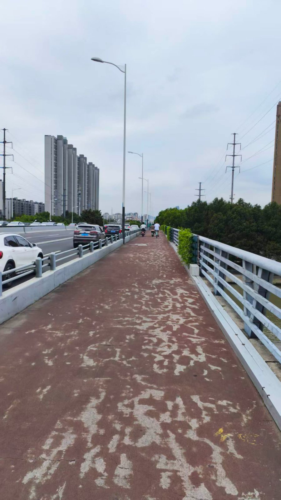
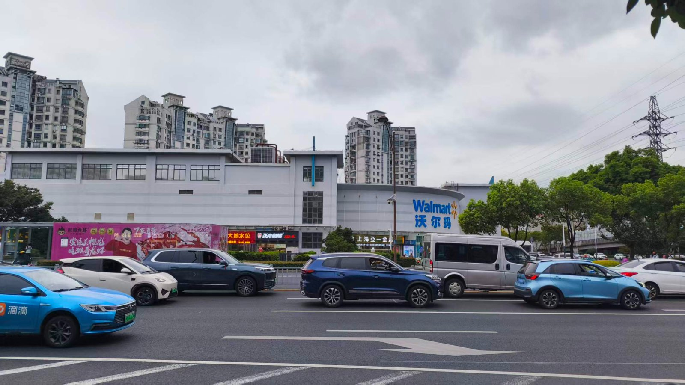
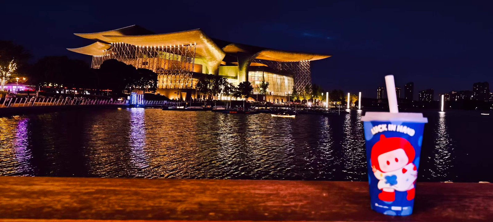

哭，在绝望前（续）
9.11我去往医院做加强ct的生活分享。
起身后，我便打车去往了人民医院，路途中间我还是会掉眼泪，我怕司机看到，我企图表演出困得样子，坐着弯下腰让司机无法从内后视镜看到我的样子，我打开抖音转移我的注意力，这样我就不会接着陷入绝望的情绪漩涡中，到了人民医院。我把注意力放在眼前。哇，这真是一个巨大的医院，在门口的时候还要做安检，可见规模不小，具体的描述我懒得写了，按照去前台询问，然后按照流程去做，当我挂完号的时候我去往二楼，我刚开始看到一堆人坐在大厅，是在等排队，我没放在心上，我直接去寻找我要去的科室，我看到门是关的，看了看门边的告牌，需要排队，才7号我的单子上是24号，我坐在科室前的椅子上，等着并分享了一下给朋友，没多久7号就轮到8号了，我以为会很快就刷了刷抖音，无聊的我看了看单子，仔细的阅读一下发现:哎？需要报到。怪不得刚刚那些人在大厅，我去去大厅找到机器赶紧签了到。这一下子就让我有了一个感悟:有些事居然出现，肯定有它的缘由，但我刚刚却不当回事，明明大厅那么多人让我心里触动了一下，但我的不在意还是为我带来了一点糗事。（我第一次来到这里，也没去过大医院，我总是待在家附近，这里又是童年经历，我想吐槽，啊!我好难受😣 我在犹豫写不写，算了吧。）等待时间很长从预期的几分钟等了一个半小时多，跟医生说完情况，就去预约加强ct的排队。需要周三去做，好煎熬，我并没有直接回宿舍，我打开地图看了看附近有没有能去的地方，我看到附近有一个沿湖公园，我想着去，我计算着距离好像走着去也能接受，于是我往那里走，我看到了共享单车，要不我骑共享单车吧，于是我骑上共享单车去往那里，中间有一条河，我需要上桥，人生地不熟的戒不掉又感到低落迷茫，按照手机上的路线我在桥下能够上去的楼梯，但我不确定幸好旁边有一个健身模样的大哥，我问了问他这里是上去的地方吗？，他说是的 然后我推着单车上去。当时在下面我看着桥上过着汽车，我不知道上面有没有单车的道，我以为机动车和非机动车共用一个道呢，上去了发现不是，是我偏见了，其实之前我也见过这种机动车与非机动车分开的情况，但我印象不深，不在城市生活，对这种东西是真不敏感。我去往了公园，天气不是很好，公园也就那样，我在看手机的时候看到附近有个万象城，我去往那里，大商场，我在那里拍了照片，逛了一圈，其实我并不知道我在逛什么，我看不懂商场，我没法欣赏这种地方，唯一看得过去的是湖边的那种感觉，可能是因为人多，我这个其实不喜欢人多的地方，会让我提不起来劲儿，我喜欢一个人听着歌，在风景好的地方，感受那种感觉。



· 完 ·
写于 2026.09.15 17:06